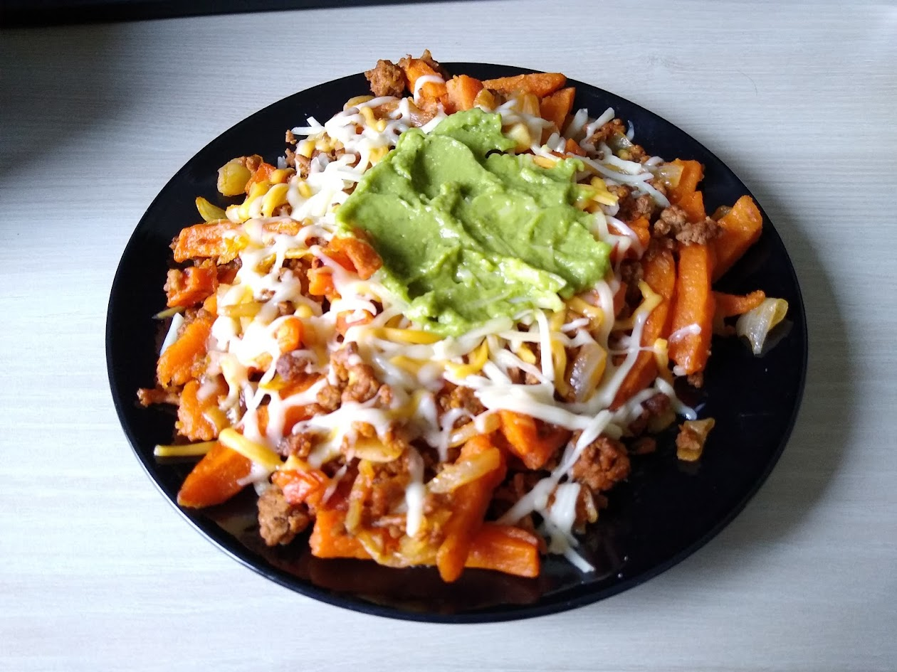

The Full Works

Description:
Sweet potato with grind meat, onion, cheese and guacamole.
Ingredients:
- Grind Meat: 500 g
- Onion: 1 piece(s)
- Sweet Potato: 500 g
- Grated Chesse: As desired
- Guacamole: As desired
- Salt and Pepper
Instructions:
- Slice the sweet potatoes and place inside the oven.
- Fry the onion.
- Add and cook the meat.
- Season with salt and pepper.
- Add all the ingredients in a bowl or plate and add the chesse and guacamole.
Return to Home Page